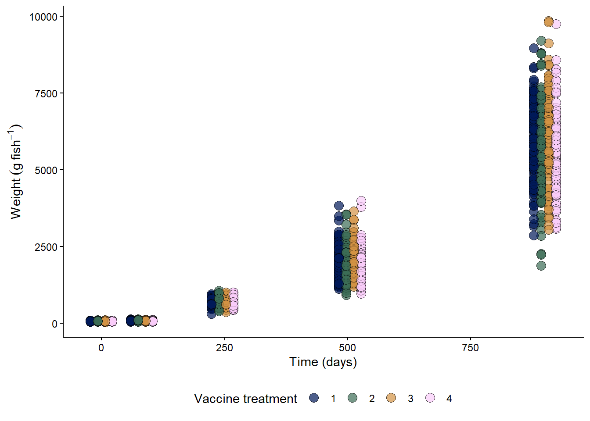
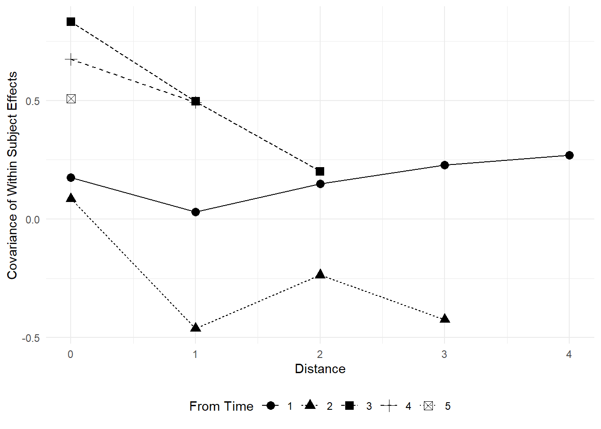
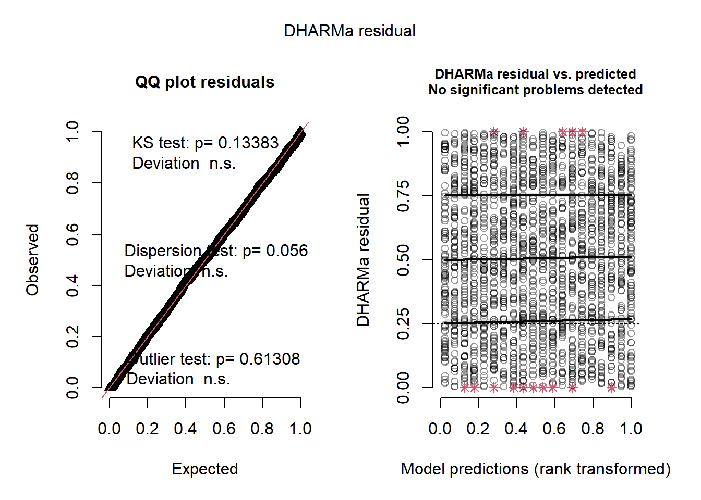

Day 10 Repeated Measures, Practice II
10.2 Repeated measures
Repeated measures designs as a special case of split-plot design.
Split-plot designs:

Figure 10.1: Schematic description of a field experiment with a split-plot design
Model behind split plots:
\[y_{ijk} \vert \boldsymbol{u} \sim P(\mu_{ijk}, \phi),\\ g(\mu_{ijk}) = \eta_{ijk} = \eta_0 + A_i + C_j +AC_{ij} + b_k + u_{i(k)},\\ b_k \sim N(0, \sigma^2_b),\\ u_{i(k)} \sim N(0, \sigma^2_u),\] where:
- \(y_{ijk}\) is the observed value for the \(i\)th level of treatment factor A, the \(j\)th level of treatment factor B in the \(k\)th block, that arises from a probability distribution \(P\), where:
- \(\mu_{ijk}\) is the expected value for that observation,
- \(\eta_{ijk}\) is the linear predictor for \(\mu\) after applying the link function \(g(\cdot)\),
- \(\phi\) is the dispersion parameter,
- \(\mu_{ijk}\) is the expected value for that observation,
- \(\eta_0\) is the overall mean for the linear predictor,
- \(A_i\) is the effect of the \(i\)th level of treatment factor A,
- \(C_j\) is the effect of the \(j\)th level of treatment factor B
- \(AC_{ij}\) is the interaction between the \(i\)th level of treatment factor A and the \(j\)th level of treatment factor B in the \(k\)th block,
- \(b_k\) is the effect of the \(k\)th block,
- \(u_{i(k)}\) is the effect of the whole plot of the \(i\)th level of treatment factor A within block \(k\).
Under a Gaussian distribution, we can also write \[y_{ijk} = \mu_0 + A_i + C_j +AC_{ij} + b_k + u_{i(k)} + \varepsilon_{ijk},\\ b_k \sim N(0, \sigma^2_b),\\ u_{i(k)} \sim N(0, \sigma^2_u), \\ \varepsilon_{ijk} \sim N(0, \sigma^2_\varepsilon).\]
- Assumptions for residuals in marginal distributions
Repeated measures:

Figure 10.2: Schematic description of a field experiment with repeated measures
10.2.1 Correlation functions
Let \(\mathbf{v}_{i k}\) be the vector for the \(k\)th individual under the \(i\)th vaccine treatment, at the different timepoints of the experiment.
\[\mathbf{v}_{i k} \sim MVN(\boldsymbol{0}, \boldsymbol{\Sigma}_{ik})\]
Independent observations
\[\boldsymbol{\Sigma}_{ik} = \sigma^2 \begin{bmatrix} 1 & 0 & 0 & 0 & 0 \\ 0 & 1 & 0 & 0 & 0 \\ 0 & 0 & 1 & 0 & 0 \\ 0 & 0 & 0 & 1 & 0 \\ 0 & 0 & 0 & 0 & 1\\ \end{bmatrix}\]
Compound symmetry
\[\boldsymbol{\Sigma}_{ik} = \sigma^2 \begin{bmatrix} 1 & \rho & \rho & \rho & \rho \\ \rho & 1 & \rho & \rho & \rho \\ \rho & \rho & 1 & \rho & \rho \\ \rho & \rho & \rho & 1 & \rho \\ \rho & \rho & \rho & \rho & 1\\ \end{bmatrix}\]
AR(1)
\[\boldsymbol{\Sigma}_{ik} = \sigma^2 \begin{bmatrix} 1 & \rho & \rho^2 & \rho^3 & \rho^4 \\ \rho & 1 & \rho & \rho^2 & \rho^3 \\ \rho^2 & \rho & 1 & \rho & \rho^2 \\ \rho^3 & \rho^2 & \rho & 1 & \rho \\ \rho^4 & \rho^3 & \rho^2 & \rho & 1\\ \end{bmatrix}\]
Unstructured
\[\boldsymbol{\Sigma}_{ik} = \begin{bmatrix} \sigma^2_{1} & \sigma^2_{12} & \sigma^2_{13} & \sigma^2_{14} & \sigma^2_{15} \\ & \sigma^2_{2} & \sigma^2_{23} & \sigma^2_{24} & \sigma^2_{25} \\ & & \sigma^2_{3} & \sigma^2_{34} & \sigma^2_{35} \\ & & & \sigma^2_{4} & \sigma^2_{45} \\ & & & & \sigma^2_{5} \\ \end{bmatrix}\]
10.2.2 Deciding which covariance function for a given problem
- Over-modeling correlation compromises power and under-modeling compromises type I error control.
- Information criteria:
- Used as a metric for predictive ability and model fit.
- Lower value = better
- No general rule about AIC magnitude
- Akaike Information Criterion (AIC): \(\text{AIC} = 2p - 2 \ln(\hat{L})\)
- AICC: correction for small sample sizes \(\text{AICc} = \text{AIC} + \frac{2p^2+2p}{n-p-1}\)
- Bayesian Information Criterion (BIC) \(\text{BIC} = p \log(n) -2\log(\hat{L})\)
- [\(p\): number of parameters estimated in the model, \(\hat{L}\): likelihood for the model, \(\hat{L}=p(\mathbf{y}\vert \hat{\boldsymbol{\beta}}, M)\)]
- Plot covariance as a function of distance (could be time or space).
- Likelihood ratio tests are not always reliable for mixed models [see Bolker’s GLMM FAQ]
10.3 Last week’s practice
We know that last week’s assignment was a clinical field trial comparing the performance of different vaccines on the growth and survival of Atlantic salmon under standard production conditions.
- Treatment structure: two-way factorial (4 vaccines x 5 times)
- Design structure: completely randomized design with repeated measures and 100 reps
- Experimental unit: fish
- Response: (1) presence of jaw deformity (same for its whole life), and (2) weight.
library(tidyverse) # data wrangling
library(glmmTMB) # generalized linear mixed models (+ repeated measures)
library(lme4) # linear mixed models
library(DHARMa) # model diagnostics
# load data
url <- "https://raw.githubusercontent.com/stat870/fall2025/refs/heads/main/data/fish_vaccines.csv"
fish <- read.csv(url)
# plot the data
fish %>%
ggplot(aes(day, wt))+
geom_point(aes(fill = factor(vaccine),
group = factor(vaccine)),
position = position_dodge(width = 60),
shape=21, size =3.5, alpha =.7)+
labs(y = expression(Weight~(g~fish^{-1})), x = "Time (days)")+
theme_classic()+
labs(fill="Vaccine treatment")+
theme(legend.position = "bottom")+
scico::scale_fill_scico_d()
10.3.1 Weight
Considering that the variance increases with the mean, a fair model for fish weight could be:
\[y_{ijk}|u_{ijk} \sim Gamma(\mu_{ijk}, \phi),\\ \log(\mu_{ijk}) = \eta_{ijk} = \eta_0 + V_i + T_j + VT_{ij} + u_{ijk},\] where:
\(y_{ijk}\) is the fish weight of the \(k\)th fish under the \(i\)th vaccine treatment at the \(j\)th timepoint, and (conditional on \(u_{ijk}\)) arises from a Gamma distribution with mean \(\mu_{ijk}\) and dispersion \(\phi\),
\(\eta_{ijk}\) is the linear predictor,
\(\eta_0\) is the overall mean mean of the linear predictor,
\(V_i\) is the effect of the \(i\)th vaccine treatment,
\(T_j\) is the effect of the \(j\)th timepoint,
\(VT_{ij}\) is the interaction between the \(i\)th vaccine treatment and the \(j\)th timepoint, and
\(u_{ijk}\) is the random effect for the fish weight of the \(k\)th fish under the \(i\)th vaccine treatment at the \(j\)th timepoint, that is accounting for the fact that repeated measures are not independent.
Gamma distribution versus log-transformation.
How do we account for the fact that repeated measures are not independent?
Independent observations
\[\boldsymbol{\Sigma}_{ik} = \sigma^2 \begin{bmatrix} 1 & 0 & 0 & 0 & 0 \\ 0 & 1 & 0 & 0 & 0 \\ 0 & 0 & 1 & 0 & 0 \\ 0 & 0 & 0 & 1 & 0 \\ 0 & 0 & 0 & 0 & 1\\ \end{bmatrix}\]
# let vaccine be a factor
fish$vaccine <- as.factor(fish$vaccine)
#create a new variable, day as factor
fish$day_f <- as.factor(fish$day)
m_indep <- glmmTMB(wt ~ vaccine*day_f,
REML = TRUE,
family = Gamma(link = "log"),
data = fish)
# dispersion parameter
sigma(m_indep)## [1] 0.215569Compound symmetry
\[\boldsymbol{\Sigma}_{ik} = \sigma^2 \begin{bmatrix} 1 & \rho & \rho & \rho & \rho \\ \rho & 1 & \rho & \rho & \rho \\ \rho & \rho & 1 & \rho & \rho \\ \rho & \rho & \rho & 1 & \rho \\ \rho & \rho & \rho & \rho & 1\\ \end{bmatrix}\]
m_cs <- glmmTMB(wt ~ vaccine*day_f + (1|fish),
REML = TRUE,
family = Gamma(link = "log"),
data = fish)
# variance of random effects
VarCorr(m_cs)##
## Conditional model:
## Groups Name Std.Dev.
## fish (Intercept) 0.1486## [1] 0.1571353AR(1)
\[\boldsymbol{\Sigma}_{ik} = \sigma^2 \begin{bmatrix} 1 & \rho & \rho^2 & \rho^3 & \rho^4 \\ \rho & 1 & \rho & \rho^2 & \rho^3 \\ \rho^2 & \rho & 1 & \rho & \rho^2 \\ \rho^3 & \rho^2 & \rho & 1 & \rho \\ \rho^4 & \rho^3 & \rho^2 & \rho & 1\\ \end{bmatrix}\]
m_ar1 <- glmmTMB(wt ~ vaccine*day_f + ar1(1 + day_f|fish),
REML = TRUE,
family = Gamma(link = "log"),
data = fish)
# variance of random effects
VarCorr(m_ar1)##
## Conditional model:
## Groups Name Std.Dev. Corr
## fish (Intercept) 0.1382 0.448 (ar1)## [1] 0.1111098Unstructured
\[\boldsymbol{\Sigma}_{ik} = \begin{bmatrix} \sigma^2_{1} & \sigma^2_{12} & \sigma^2_{13} & \sigma^2_{14} & \sigma^2_{15} \\ & \sigma^2_{2} & \sigma^2_{23} & \sigma^2_{24} & \sigma^2_{25} \\ & & \sigma^2_{3} & \sigma^2_{34} & \sigma^2_{35} \\ & & & \sigma^2_{4} & \sigma^2_{45} \\ & & & & \sigma^2_{5} \\ \end{bmatrix}\]
m_us <- glmmTMB(wt ~ vaccine*day_f + us(1 + day_f|fish),
REML = TRUE,
family = Gamma(link = "log"),
data = fish)
# variance of random effects
VarCorr(m_us)##
## Conditional model:
## Groups Name Std.Dev. Corr
## fish (Intercept) 0.17436
## day_f82 0.02928 0.086
## day_f246 0.14926 -0.461 0.832
## day_f505 0.22882 -0.236 0.496 0.674
## day_f901 0.26899 -0.424 0.201 0.492 0.509## [1] 0.062381510.3.1.1 Comparing covariance functions
Information criteria
library(AICcmodavg)
model_comparison <- AIC(m_indep, m_cs, m_ar1, m_us)
model_comparison$AICc <- c(
AICc(m_indep),
AICc(m_cs),
AICc(m_ar1),
AICc(m_us)
)
model_comparison$BIC <- BIC(m_indep, m_cs, m_ar1, m_us)$BIC
model_comparison## df AIC AICc BIC
## m_indep 21 24587.91 24588.38 24705.53
## m_cs 22 23996.17 23996.68 24119.39
## m_ar1 23 23923.06 23923.62 24051.88
## m_us 36 23355.32 23356.68 23556.96Visualizing
Use fitted variance covariance matrix from unstructured covariance matrix.
varcor_us %>%
ggplot(aes(time2-time1, cor))+
geom_line(aes(group = time1, linetype = factor(time1)))+
geom_point(aes(shape = factor(time1)), size =3)+
labs(x = "Distance",
shape = "From Time",
linetype = "From Time",
y = "Covariance of Within Subject Effects")+
theme_minimal()+
theme(legend.position = "bottom")
- Discuss what would be ideal under the different assumptions.
Residual diagnostics

## Object of Class DHARMa with simulated residuals based on 250 simulations with refit = FALSE . See ?DHARMa::simulateResiduals for help.
##
## Scaled residual values: 0.864 0.796 0.796 0.7 0.62 0.932 0.992 0.964 0.516 0.288 0.764 0.6 0.692 0.176 0.492 0.548 0.56 0.46 0.732 0.884 ...- Check out DHARMa documentation.
10.3.1.2 Inference
library(emmeans)
marginal_means <- emmeans(m_us, ~ vaccine, at = list(day_f = factor(901)), type = "response")
marginal_means## vaccine response SE df asymp.LCL asymp.UCL
## 1 5715 148 Inf 5432 6012
## 2 5451 141 Inf 5181 5734
## 3 5915 153 Inf 5623 6223
## 4 5365 139 Inf 5100 5644
##
## Confidence level used: 0.95
## Intervals are back-transformed from the log scaleemmeans(m_us, ~ vaccine,
at = list(day_f = factor(901)),
type = "response",
contr = list(c(-1, 0, 1, 0),
c(0, -1, 1, 0),
c(0, 0, 1, -1)))$contr## NOTE: Results may be misleading due to involvement in interactions## contrast ratio SE df null z.ratio p.value
## c(-1, 0, 1, 0) 1.04 0.0378 Inf 1 0.943 0.3457
## c(0, -1, 1, 0) 1.09 0.0397 Inf 1 2.235 0.0254
## c(0, 0, 1, -1) 1.10 0.0403 Inf 1 2.670 0.0076
##
## Tests are performed on the log scale10.3.2 Jaw deformity
Considering that the jaw deformity was observed only once in the fish’s cylcle, a fair model for fish jaw deformity could be:
\[y_{ij} \sim Binomial(\mu_{ij}, 1),\\ \text{logit}(\mu_{ij}) = \eta_{ij} = \eta_0 + V_i\] where:
- \(y_{ijk}\) is the presence (1) or absence (0) of jaw deformity on the \(j\)th fish under the \(i\)th vaccine treatment and arises from a Binomial distribution with mean \(\mu_{ijk}\) and only one trial (i.e., Bernoulli distribution),
- \(\eta_{ij}\) is the linear predictor,
- \(\eta_0\) is the overall mean mean of the linear predictor,
- \(V_i\) is the effect of the \(i\)th vaccine treatment.
# take a subset so that the data are not cloned 5 times
fish_sub <- fish %>% filter(day == 901)
# fit binomial model
m_jaw <- glmmTMB(jaw ~ vaccine,
REML = TRUE,
family = binomial(link = "logit"),
data = fish_sub)
# dispersion parameter
sigma(m_jaw)## [1] 1emmeans(m_jaw, ~ vaccine,
type = "response",
contr = list(c(-1, 0, 1, 0),
c(0, -1, 1, 0),
c(0, 0, 1, -1)))## $emmeans
## vaccine prob SE df asymp.LCL asymp.UCL
## 1 0.09 0.0286 Inf 0.0475 0.164
## 2 0.14 0.0347 Inf 0.0847 0.223
## 3 0.12 0.0325 Inf 0.0694 0.200
## 4 0.12 0.0325 Inf 0.0694 0.200
##
## Confidence level used: 0.95
## Intervals are back-transformed from the logit scale
##
## $contrasts
## contrast odds.ratio SE df null z.ratio p.value
## c(-1, 0, 1, 0) 1.379 0.642 Inf 1 0.690 0.4903
## c(0, -1, 1, 0) 0.838 0.353 Inf 1 -0.420 0.6744
## c(0, 0, 1, -1) 1.000 0.435 Inf 1 0.000 1.0000
##
## Tests are performed on the log odds ratio scale10.4 Task for today
Answer the researcher’s questions and mention one way they could improve the power of their experiment to detect differences in final weight between treatments. Write an email answering the researcher’s questions and email them tonight midnight.
Last week’s prompt:
You are consultant statisticians. A researcher has come to you to request help analyzing data generated by a designed experiment. They described the experiment in the following email:
I hope you are doing well. I am writing to request assistance with my statistical analysis for an aquaculture clinical field trial in the Bay of Fundy, Canada. Please find a description of the study below.
The objective of our research was to compare the performance of different vaccines on the growth and survival of Atlantic salmon under standard production conditions. On day 0 of the study, we applied 4 different vaccines to a total of 100 randomly selected fish. Salmons were individually tagged in February 2005 and followed through to harvest in August 2007. All fish were always kept in the same cage. We recorded (1) presence of jaw deformity, and (2) weight throughout the trial. As jaw deformities are formed at an early stage of growth and are not healed, detection of a jaw deformity at any sampling event implied that the fish was labelled as having a jaw deformity throughout the entire growth period.
The outcome of interest is the weight, as weights increase from means of 60 g at day 0, to 5,700 g at harvest. However, it is also important to know whether there are differences in propensity to presenting jaw deformity among vaccines.
I need help with the following:
- Describing the experiment design for materials and methods.
- Analyzing the data and determining:
- If there are differences between vaccines, especially at harvest,
- If there is a “better vaccine” for final weight,
- If there is difference in jaw deformity between vaccine treatments.